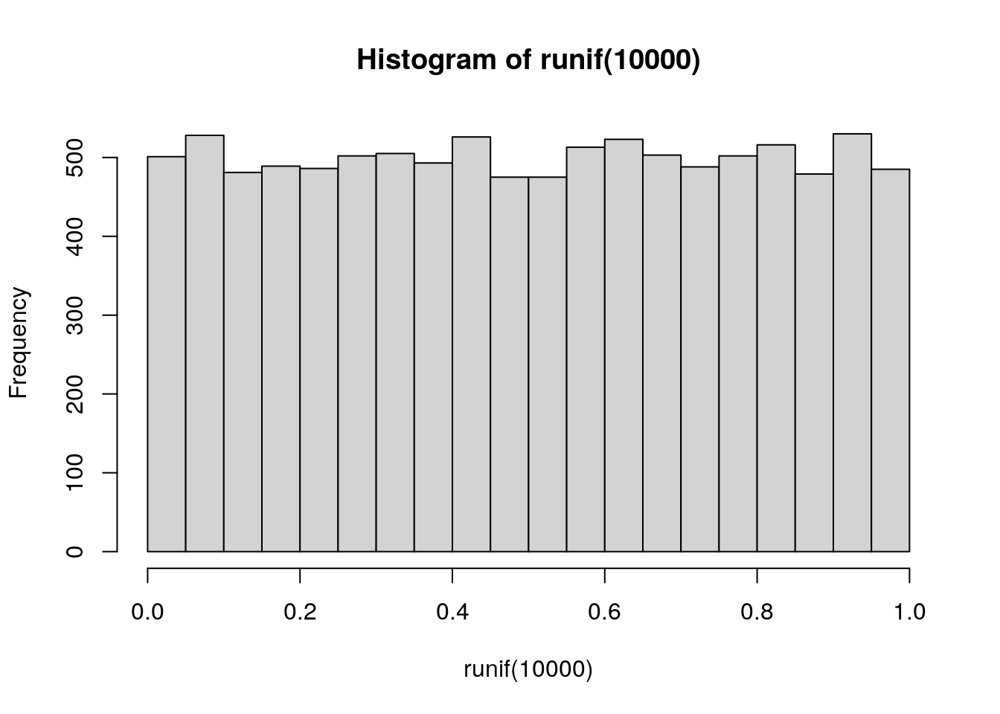
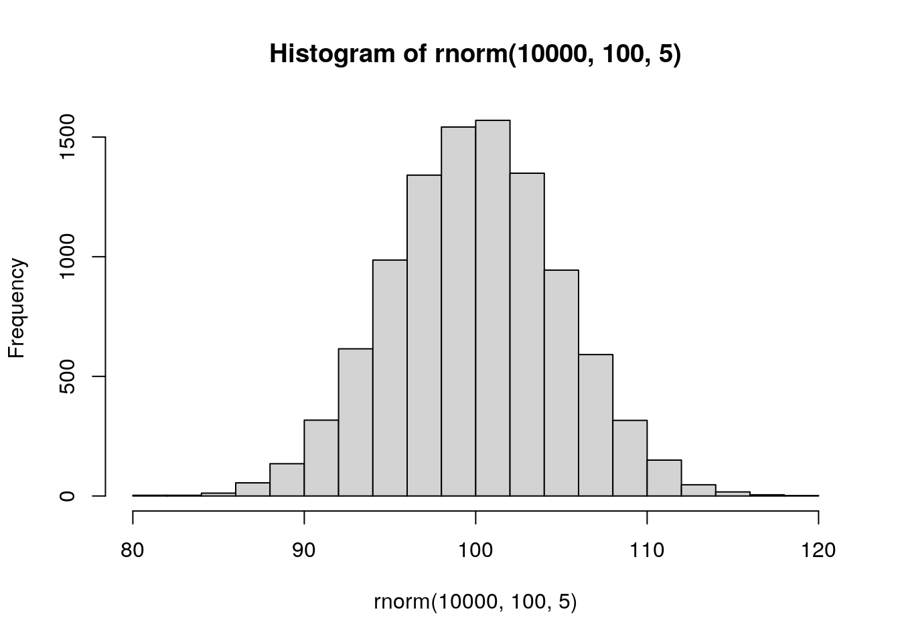

Chapter 2 R base function
2.0.1 字串
字串連接
paste("OTU_", 1, sep="")
## [1] "OTU_1"
paste("OTU_", 1:10, sep="")
## [1] "OTU_1" "OTU_2" "OTU_3" "OTU_4" "OTU_5" "OTU_6" "OTU_7" "OTU_8"
## [9] "OTU_9" "OTU_10"str_vec1 <- c("aaa", "bbb", "ccc", "ddd")
str_vec2 <- c(1, 2, 3, 4)
paste(str_vec1, str_vec2, sep="_")
## [1] "aaa_1" "bbb_2" "ccc_3" "ddd_4"
paste(str_vec1, collapse ="_")
## [1] "aaa_bbb_ccc_ddd"字串切割
sentence = "The earth is round (p < 0.05)."
strsplit(sentence, split=" ", fixed=F)
## [[1]]
## [1] "The" "earth" "is" "round" "(p" "<" "0.05)."
strsplit(sentence, split="\\s", fixed=F)
## [[1]]
## [1] "The" "earth" "is" "round" "(p" "<" "0.05)."
substr(sentence,5,9)
## [1] "earth"部份字串搜尋
str_vec <- c("aaa", "bbb", "ccc", "ddd")
grep("a", str_vec)
## [1] 1
grep("b", str_vec)
## [1] 2
grep("b", str_vec, value=T)
## [1] "bbb"
grep("b", str_vec, value=T, invert=T)
## [1] "aaa" "ccc" "ddd"
grep("z", str_vec)
## integer(0)
grepl("b", str_vec)
## [1] FALSE TRUE FALSE FALSE字串取代
2.0.2 亂數產生
Uniform distribution
runif(5) #sampling 5 numbers form 0 to 1
## [1] 0.72256884 0.04348463 0.59515135 0.35431701 0.25617647
runif(5,2,10) #sampling 5 numbers form 2 to 10
## [1] 9.700805 7.190126 8.232833 5.156930 2.921558
hist(runif(10000))
Normal distribution
rnorm(5) #sampling 5 numbers : mean = 0, sd = 1
## [1] -0.4609833 0.2480591 -0.5656726 0.9785045 -0.9645702
rnorm(5,10,1) #sampling 5 numbers : mean = 10, sd = 1
## [1] 10.197813 9.267838 12.400211 9.209569 10.559206
hist(rnorm(10000,100,5))
Binomial distribution
Exponential distribution
2.0.3 矩陣運算
產生矩陣
M <- matrix(0, nrow = 5, ncol = 6)
M
## [,1] [,2] [,3] [,4] [,5] [,6]
## [1,] 0 0 0 0 0 0
## [2,] 0 0 0 0 0 0
## [3,] 0 0 0 0 0 0
## [4,] 0 0 0 0 0 0
## [5,] 0 0 0 0 0 0
M <- matrix(rnorm(3*2,10,5),3,2)
M
## [,1] [,2]
## [1,] 9.576546 12.200143
## [2,] 14.400502 11.537363
## [3,] 11.597626 2.562807測維度
矩陣組合
cbind(M,M)
## [,1] [,2] [,3] [,4]
## [1,] 9.576546 12.200143 9.576546 12.200143
## [2,] 14.400502 11.537363 14.400502 11.537363
## [3,] 11.597626 2.562807 11.597626 2.562807
rbind(M,M)
## [,1] [,2]
## [1,] 9.576546 12.200143
## [2,] 14.400502 11.537363
## [3,] 11.597626 2.562807
## [4,] 9.576546 12.200143
## [5,] 14.400502 11.537363
## [6,] 11.597626 2.562807矩陣轉置
M <- matrix(1:8,nrow = 2, dimnames = list(c("r1","r2"),c("c1","c2","c3","c4")))
M
## c1 c2 c3 c4
## r1 1 3 5 7
## r2 2 4 6 8
t(M) # 轉置
## r1 r2
## c1 1 2
## c2 3 4
## c3 5 6
## c4 7 8
M[nrow(M):1,] # 上下翻轉
## c1 c2 c3 c4
## r2 2 4 6 8
## r1 1 3 5 7
M[,ncol(M):1] # 左右翻轉
## c4 c3 c2 c1
## r1 7 5 3 1
## r2 8 6 4 2
t(apply(M, 2, rev)) # 順時針90度翻轉
## r2 r1
## c1 2 1
## c2 4 3
## c3 6 5
## c4 8 7
apply(t(M), 2, rev) # 逆時針90度翻轉
## r1 r2
## c4 7 8
## c3 5 6
## c2 3 4
## c1 1 2其他運算
M <- matrix(1:9,3,3)
M
## [,1] [,2] [,3]
## [1,] 1 4 7
## [2,] 2 5 8
## [3,] 3 6 9
diag(M) #對角線的元素
## [1] 1 5 9
diag(M) = 0
M
## [,1] [,2] [,3]
## [1,] 0 4 7
## [2,] 2 0 8
## [3,] 3 6 0
M %*% M #矩陣乘法
## [,1] [,2] [,3]
## [1,] 29 42 32
## [2,] 24 56 14
## [3,] 12 12 69
library(matrixStats)
M <- matrix(rnorm(5*7,10,3),5,7)
M
## [,1] [,2] [,3] [,4] [,5] [,6] [,7]
## [1,] 11.291282 9.180391 10.902502 7.990798 14.457731 10.651007 9.335843
## [2,] 8.863919 12.919020 12.205880 9.821139 6.770227 13.315724 7.844703
## [3,] 12.842186 12.625160 8.387548 9.166537 10.478959 10.732770 11.084385
## [4,] 10.028342 12.638942 12.476397 6.293060 13.801532 7.705573 8.134795
## [5,] 11.303011 8.904384 8.082337 14.281593 5.961345 12.647874 12.610142
rowSums(M)
## [1] 73.80955 71.74061 75.31754 71.07864 73.79069
rowMeans(M)
## [1] 10.54422 10.24866 10.75965 10.15409 10.54153
rowSds(M)
## [1] 2.075797 2.593171 1.641489 2.882926 2.971805
rowMaxs(M)
## [1] 14.45773 13.31572 12.84219 13.80153 14.28159
rowMins(M)
## [1] 7.990798 6.770227 8.387548 6.293060 5.961345Z-transformation
| sample_1 | sample_2 | sample_3 | sample_4 | sample_5 | sample_6 | |
|---|---|---|---|---|---|---|
| gene_1 | 10.627909 | 9.650561 | 13.01061 | 8.669535 | 14.357361 | 6.704488 |
| gene_2 | 13.718288 | 10.251021 | 11.94281 | 8.363960 | 9.954190 | 12.412464 |
| gene_3 | 5.988395 | 11.495754 | 12.72961 | 11.752669 | 8.997694 | 7.591013 |
| gene_4 | 12.754950 | 9.937096 | 12.05163 | 13.317813 | 10.313676 | 12.716374 |
| gene_5 | 8.365663 | 18.949601 | 13.48431 | 14.929497 | 11.544229 | 12.337097 |
cal_z_score <- function(x){
(x - mean(x)) / sd(x)
}
z_transformed <- t(apply(gene_expression, 1, cal_z_score))
z_transformed| sample_1 | sample_2 | sample_3 | sample_4 | sample_5 | sample_6 | |
|---|---|---|---|---|---|---|
| gene_1 | 0.0441961 | -0.3027537 | 0.8900313 | -0.6510087 | 1.3681173 | -1.3485822 |
| gene_2 | 1.3463351 | -0.4414114 | 0.4308847 | -1.4143927 | -0.5944592 | 0.6730435 |
| gene_3 | -1.4189003 | 0.6534464 | 1.1177308 | 0.7501201 | -0.2865407 | -0.8158564 |
| gene_4 | 0.6479245 | -1.3664582 | 0.1451469 | 1.0502946 | -1.0972550 | 0.6203473 |
| gene_5 | -1.3816413 | 1.6010202 | 0.0608468 | 0.4681139 | -0.4858891 | -0.2624506 |